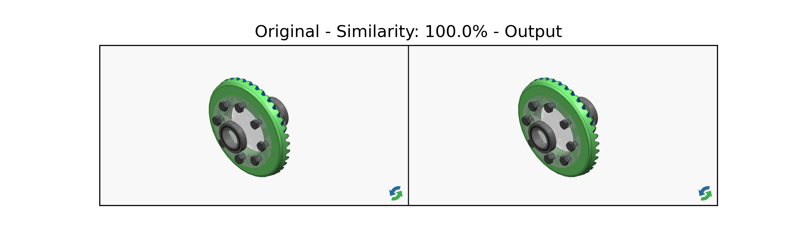
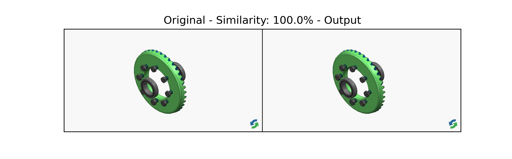
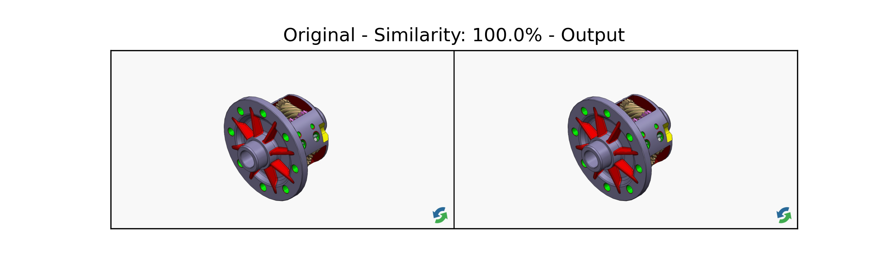
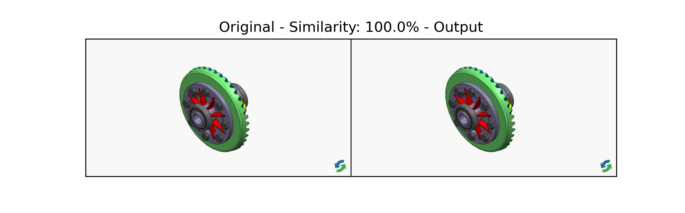

*** DISPLAY MODE ***
** Hide: ASM Torsen Differential.stp **

** Hide + Hide Ghosts: ASM Torsen Differential.stp **

** Show only: ASM Torsen Differential.stp **

** Show all: ASM Torsen Differential.stp **

** Manipulate: ASM Torsen Differential.stp **
OK!
Successfully passed!
*** --- RESULT --- ***
OK!
Successfully passed!
+
Images are fully or almost identical.